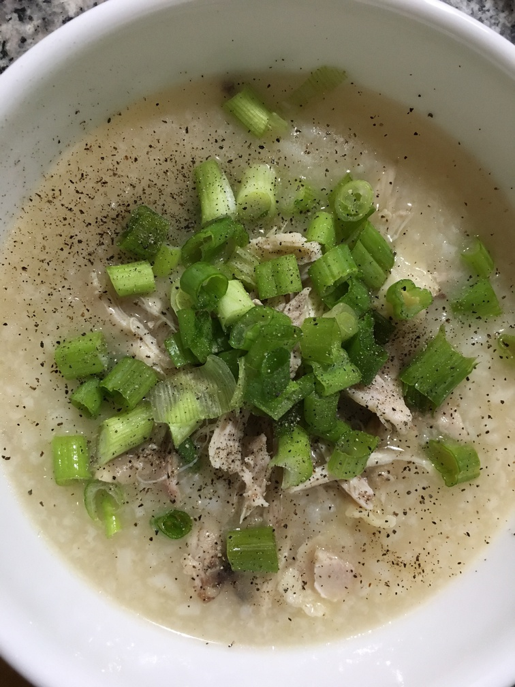

| Other | Meat | Veggie | Fruit |
|---|---|---|---|
| gio chao quay | chicken | green onions | |
| jasmine rice | ground pork | shallot | |
| pepper | |||
| salt | |||
| wonton soup base |
| instructions |
|---|
| Make rice |
| Marinate chicken or pork with salt, pepper & shallots |
| If using pork, stir fry it |
| Boil water and add chicken/pork |
| If using chicken, remove after boiling and shred into strips when cooled |
| Add rice and boil until it has expanded (~1 hr) |
| Add wonton soup base |
| Spoon into bowl and adjust with pepper, gio chao quay, minced green onions |